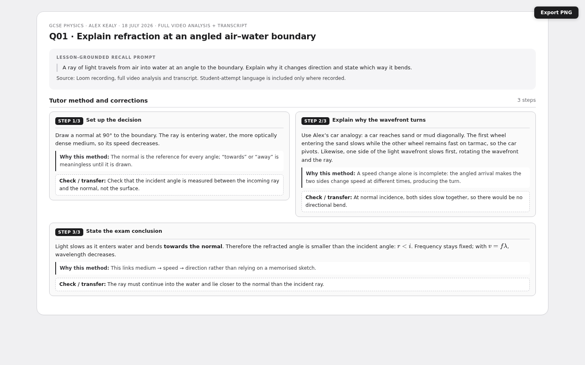
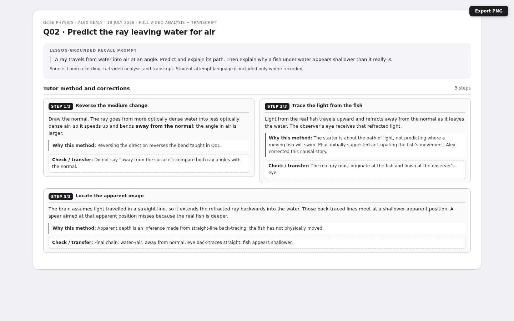
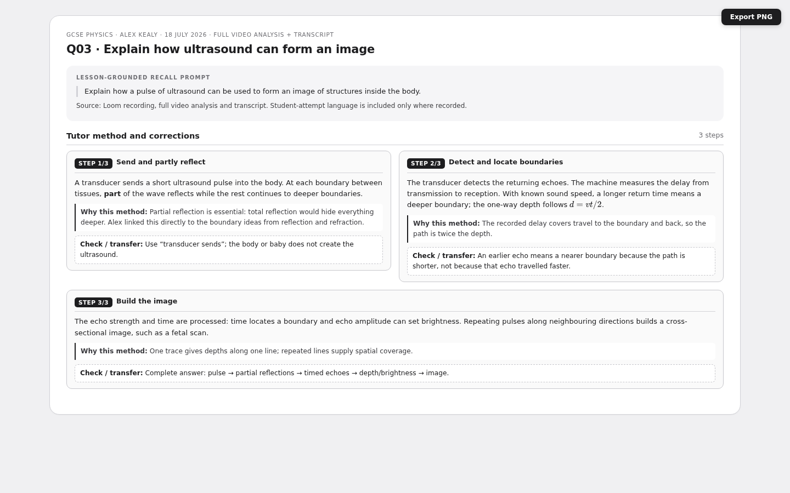
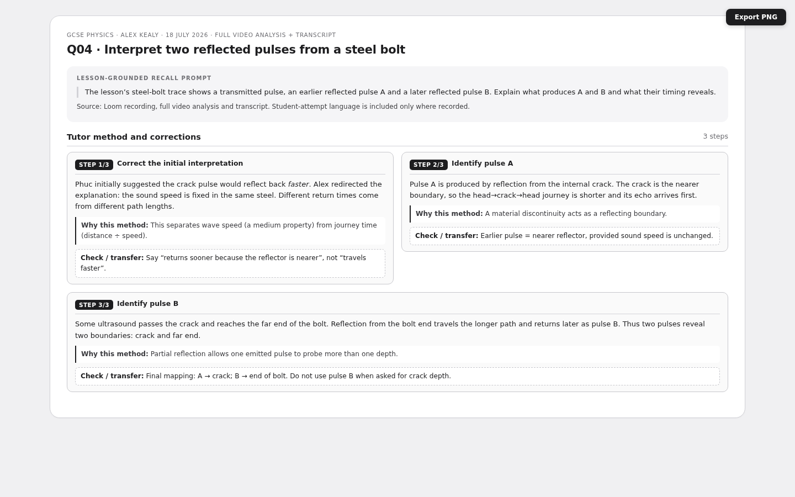
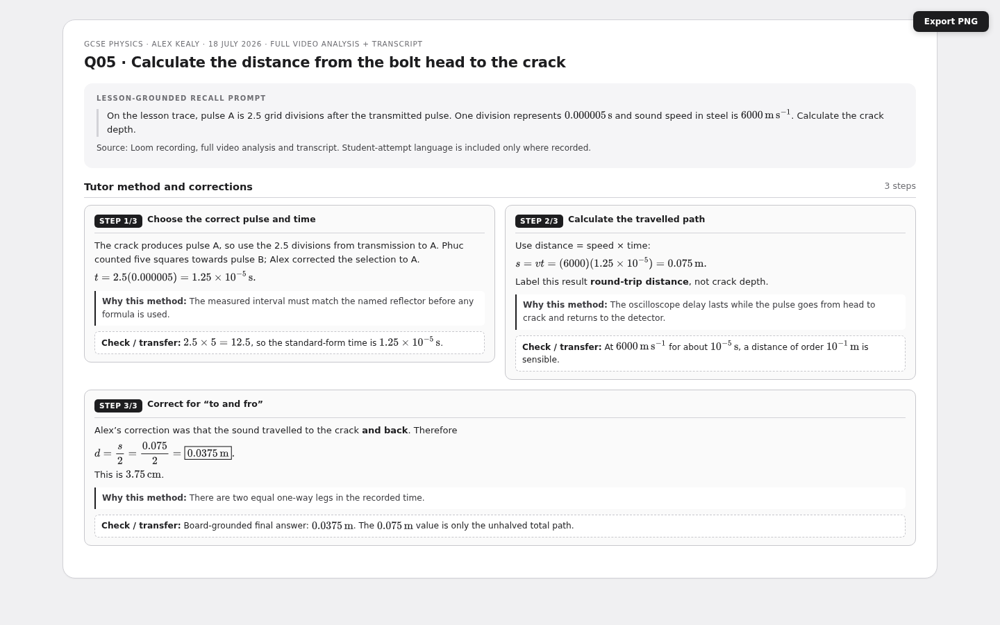
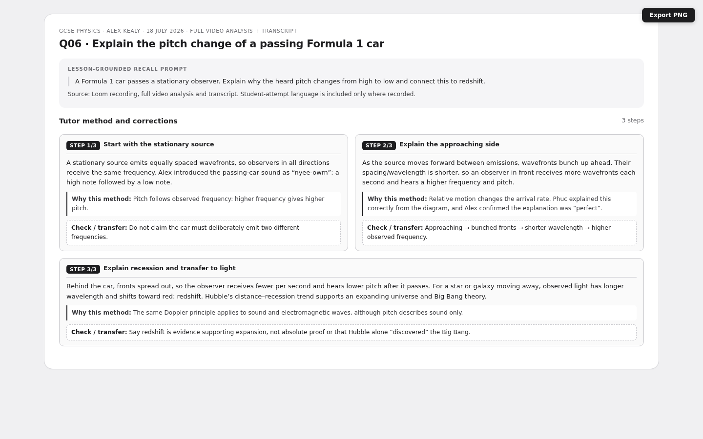

Refraction, Ultrasound, Frequency & Doppler
Multi-step S1-layout recall cards re-grounded in the full video analysis and transcript from Alex Kealy’s 18 July 2026 GCSE Physics lesson. Each PNG shows the tutor method, recorded student attempt/correction where available, and a check.
6 cardsAlexMulti-step
Q01 · Explain refraction at an angled air–water boundary

Q02 · Predict the ray leaving water for air

Q03 · Explain how ultrasound can form an image

Q04 · Interpret two reflected pulses from a steel bolt

Q05 · Calculate the depth of an internal crack

Q06 · Explain the passing-car Doppler effect and redshift
